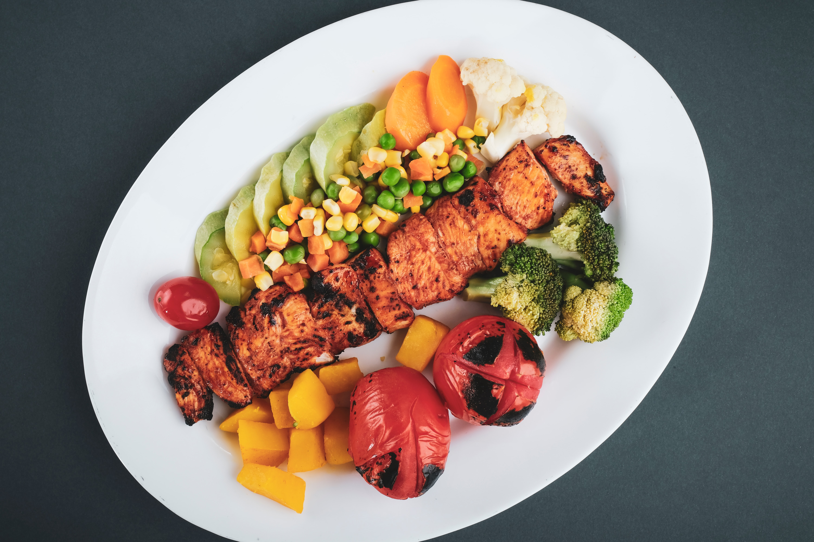

Chicken Barbeque

Descriptions
Barbecue chicken consists of chicken parts or entire chickens that are barbecued, grilled or smoked. There are many global and regional preparation techniques and cooking styles. Barbecue chicken is often seasoned or coated in a spice rub, barbecue sauce, or both.
Ingredients
- 4 tablespoons water
- 3 tablespoons ketchup
- 3 tablespoons brown sugar
How to cook
- Preheat the oven to 500 degrees F (260 degrees C). In a small saucepan over medium heat, stir together the water, ketchup, brown sugar, vinegar, lemon juice, and Worcestershire sauce. Season with salt, mustard powder, and chili powder. Simmer the sauce for 15 minutes.
- Place the chicken thighs into an oblong baking dish, and pour the sauce over them. Cover tightly.
- Bake for 15 minutes in the preheated oven, then reduce the temperature to 300 degrees F (150 degrees C), and bake for one hour. Remove cover, stir and bake uncovered for 15 minutes.